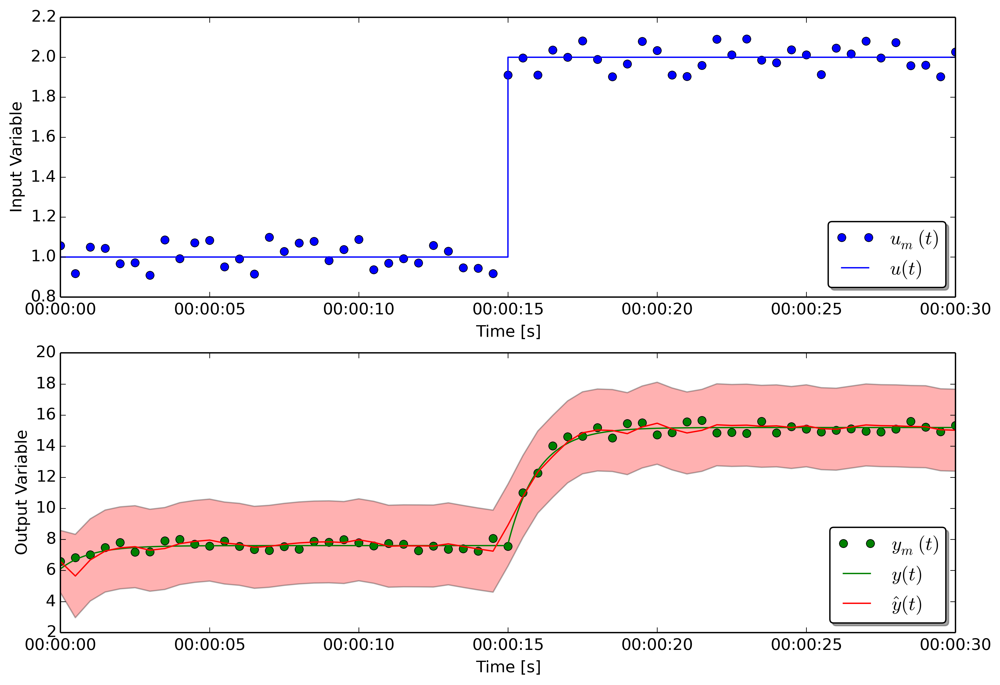

First-Order system¶
The example demonstrates how to use estimationpy to run simulations, pools of simulations in parallel, and solve a state estimation problem. The examples investigated here uses the following LTI system described by equations
where \(x_0=2\), \(a=-1\), \(b=2.5\), \(c=3\), and \(d=0.1\).
The model can be written in Modelica as
1 2 3 4 5 6 7 8 9 10 11 12 13 14 15 16 17 | within FmuExamples;
model FirstOrder "Model of a linear SISO first order system"
output Real x(start = 2.0) "State variable of the system";
input Real u "Input variable";
output Real y "Output of the system";
parameter Real a = -1 "A coefficient of the SISO linear system"
annotation(Fixed=false);
parameter Real b = 2.5 "B coefficient of the SISO linear system"
annotation(Fixed=false);
parameter Real c = 3 "C coefficient of the SISO linear system"
annotation(Fixed=false);
parameter Real d = 0.1 "D coefficient of the SISO linear system"
annotation(Fixed=false);
equation
der(x) = a*x + b*u;
y = c*x + d*u;
end FirstOrder;
|
and can be exported as a Functional Mockup Unit (FMU). This model has been exported using Dymola (Linux version, both 32 and 64 bits) and is located in the project folder.
Run a simulation¶
The first example shows how to run a simple simulation using the FMU model.
1 2 3 4 5 6 7 8 9 10 11 12 13 14 15 16 17 | estimationpy_logging.configure_logger(log_level = logging.DEBUG, log_level_console = logging.INFO, log_level_file = logging.DEBUG)
def main():
else:
print "64-bit architecture"
filePath = os.path.join(dir_path, "..", "..", "modelica", "FmuExamples", "Resources", "FMUs", "FirstOrder_64bit.fmu")
# Show the outputs
print "The names of the FMU outputs are:", m.get_output_names(), "\n"
# Set the CSV file associated to the input
inputPath = os.path.join(dir_path, "..", "..", "modelica", "FmuExamples", "Resources", "data", "SimulationData_FirstOrder.csv")
input_u = m.get_input_by_name("u")
input_u.get_csv_reader().open_csv(inputPath)
input_u.get_csv_reader().set_selected_column("system.u")
# Initialize the model for the simulation
|
The model is instantiated in line 2, then at line 5 the path of the
FMU file is provided.
The input data is located in a CSV file called SimulationData_FirstOrder.csv.
First the input of the model is selected by its name u, and its reference
is the object input_u.
After, the CSV file is associated to the input variable (line 10), and the
name of the column is indicated in line 11.
The instructions at line 14 and 17 respectively initialize the model, and run the simulation. The simulation command does not have arguments thus the time model is simulated for the time period specified in the CSV file. The figure below shows the result.

Run multiple simulations¶
The second example shows how to run a pool of models that use all the same FMU model.
1 2 3 4 5 6 7 8 9 10 11 12 13 14 15 16 17 18 19 20 21 22 23 24 25 26 27 28 29 30 31 32 33 | import logging
from estimationpy.fmu_utils import estimationpy_logging
estimationpy_logging.configure_logger(log_level = logging.DEBUG, log_level_console = logging.INFO, log_level_file = logging.DEBUG)
print "32-bit architecture"
filePath = os.path.join(dir_path, "..", "..", "modelica", "FmuExamples", "Resources", "FMUs", "FirstOrder.fmu")
else:
print "64-bit architecture"
filePath = os.path.join(dir_path, "..", "..", "modelica", "FmuExamples", "Resources", "FMUs", "FirstOrder_64bit.fmu")
# Assign an existing FMU to the model
m.re_init(filePath)
# Set the CSV file associated to the input
inputPath = os.path.join(dir_path, "..", "..", "modelica", "FmuExamples", "Resources", "data", "SimulationData_FirstOrder.csv")
input_u = m.get_input_by_name("u")
input_u.get_csv_reader().open_csv(inputPath)
input_u.get_csv_reader().set_selected_column("system.u")
# Select the states to be modified
m.add_variable(m.get_variable_object("x"))
# Initialize the simulator
m.initialize_simulator()
# Instantiate the pool
pool = FmuPool(m, processes = n_proc)
# define the vector of initial conditions for which the simulations
# have to be performed.
# values has to be a list of state vectors
# values = [ [x0_0], [x0_1], ... [x0_n]]
vector_values = numpy.linspace(1.0, 5.0, 10)
values = []
|
In this case the only difference with respect tp the previosu case is that instead
of calling directly the estimationpy.fmu_utils.model.Model.simulate() method,
we define a estimationpy.fmu_utils.fmu_pool.FmuPool object.
Then in lines 26-30 we create 10 different initial conditions for the
state vector, and in line 33 we run the simulation. The Figure below shows
the results of the 10 different simulations that are executed in parallel.
State estimation¶
The third example shows how to solve a state estimation problem with estimationpy and an FMU model. Please note that in this example the model used by the state estimation algorithm has been parametrized with values for \(a\), \(b\), \(c\), and \(d\) that are different from the ones that were used to generate the measurements. This different represents a case of model mismatch between the real system and its model.
In this case we have access to a set of measurements and we desire to estimate the unknown state of the model. We have available a measurement of the input variable \(u(t)\) corrupted by noise \(u_m(t)\). Similarly, we don’t know the exact value of the output \(y(t)\) but we have a measure of it \(y_m(t)\). The state estimation algorithm, implemented using an Unscented Kalman Filter, uses these measurements together with the model to estimate the probability distribution of the state variable \(x(t)\) and of the output \(y(t)\). We indicates the estimated values with a hat, \(\hat{x}(t)\) and \(\hat{y}(t)\).
1 2 3 4 5 6 7 8 9 10 11 12 13 14 15 16 17 18 19 20 21 22 23 24 25 26 27 28 29 30 31 32 33 34 | else:
print "64-bit architecture"
# Path of the csv file containing the data series
csvPath = os.path.join(dir_path, "..", "..", "modelica", "FmuExamples", "Resources", "data", "NoisySimulationData_FirstOrder.csv")
# Set the CSV file associated to the input, and its covariance
input_u = m.get_input_by_name("u")
input_u.get_csv_reader().open_csv(csvPath)
input_u.get_csv_reader().set_selected_column("system.u")
input_u.set_covariance(2.0)
# Set the CSV file associated to the output, and its covariance
output = m.get_output_by_name("y")
output.get_csv_reader().open_csv(csvPath)
output.get_csv_reader().set_selected_column("system.y")
output.set_measured_output()
output.set_covariance(2.0)
# Select the states to be identified, and add it to the list
m.add_variable(m.get_variable_object("x"))
# Set initial value of state, and its covariance and the limits (if any)
var = m.get_variables()[0]
m.set_real(par_c, 3.01419707)
par_d = m.get_variable_object("d")
m.set_real(par_d, 0.06112703)
# Initialize the model for the simulation
m.initialize_simulator()
# instantiate the UKF for the FMU
ukf_FMU = UkfFmu(m)
|
The code snippet shows how this problemis solved. As in the previous cases
we associate a column of the CSV file (in this case a CSV file with noisy
data) to the input u of the FMU model (lines 4-7).
However in this case we also need to specify which is the measured output, and we
which measured data is associated to it. Also, we can specify the covariance
of this data that can be seen as a proxy of the data quality.
After, in line 17, we specify that the model is used for estimating one state variable,
whose name is x. In lines 20-24 we provide details for the state variable
to estimate
- initial value \(x_0 = 1.5\),
- covariance \(\sigma^2 = 0.5\),
- lower constraint \(x_{min} = 0\)
As before we initialize the simulator (line 26), and then we instantiate an
object of type estimationpy.ukf.ufk_fmu.UfkFmu.
At the end, at line 34, we start the filter and we specify its start and stop
time by providing two datetime objects. Please not that their time zone
is set to UTC.
The first plot shows the input data (blue dots) used by the UKF, and the measured output data (green dots). The blue line and the green line are the true values that were not made available to the UKF. The red line in the bottom plot shows the value of the estimated output variable \(\hat{y}(t)\), and its confidence interval.
The Figure below shows in green the unknown state variable \(x(t)\) and in red its estimation \(\hat{x}(t)\). The red area around the estimation indicates the confidence interval of the estimation.